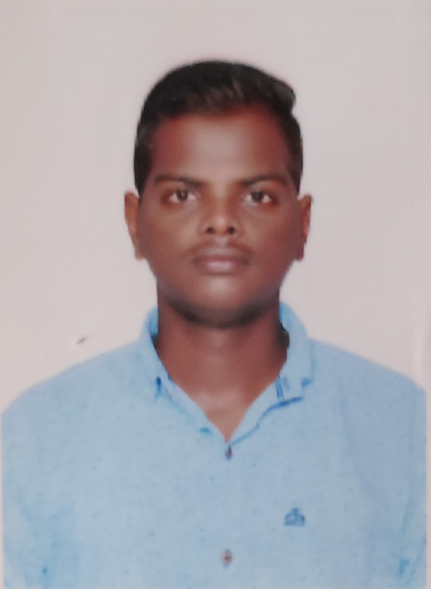

QA Engineer with 2+ years of experience in functional, regression, system, and UAT testing of web applications. Currently upskilling in test automation to drive faster, more reliable releases.
I'm a QA Engineer with 2+ years of experience in functional, regression, system, and UAT testing of web applications. I bring strong knowledge of STLC, SDLC, Agile/Scrum, defect life cycle, and test case design.
Currently upskilling in automation testing using Selenium and Python to improve regression efficiency and bring more speed and reliability to release cycles.
My background in electrical and manufacturing domains has sharpened my analytical thinking and root-cause analysis skills — making me a thorough and structured tester.
My professional journey across software QA and quality-focused engineering roles.
Conducted inspection, verification, and documentation activities to ensure systems operated within defined quality and safety standards. Supported process validation, deviation identification, and corrective action reporting. Applied 5S, safety, and quality guidelines reinforcing process discipline directly transferable to QA roles.
Executed functional, regression, system, and integration testing for web applications, improving release stability and reducing production defects. Analyzed business requirements to prepare test scenarios, test cases, and test data. Performed manual API testing using Postman and basic backend validation using SQL. Supported UAT activities and collaborated with cross-functional teams in Agile/Scrum environments.
Foundations that shaped my analytical and structured thinking.
Developed strong analytical and problem-solving skills through core engineering coursework. Applied structured thinking and documentation practices relevant to quality assurance roles.
Completed higher secondary education with a focus on Computer Science, building early foundations in programming and logical thinking.
Certified in modern software testing practices including agile development, automation, and risk-based testing. Covers static and dynamic testing, white-box and black-box techniques, and experience-based approaches.
The tools, testing types, and methodologies I bring to every project.
Key projects where I drove quality, reduced defects, and improved test coverage.
Mobile application for graduates & students to discover jobs based on their requirements.
Led manual testing activities including functional, regression, and integration testing. Created detailed test cases for mobile UI, usability, and performance behavior. Reduced post-release defects by 40% through multiple regression cycles and improved test case effectiveness by 30% through structured scenario-based coverage.
Online web application helping recruiters find the perfect candidate for required positions.
Carried out end-to-end manual testing of recruitment workflow modules. Prepared test plan, test cases, and executed functional and regression testing. Identified and logged high-priority defects, reducing production issues by 45% and enhancing overall test coverage by 35% through detailed scenario-based testing. Ensured stable production release with zero critical defects.
Open to QA Engineer roles and test automation opportunities. Feel free to reach out — I'd love to connect.
